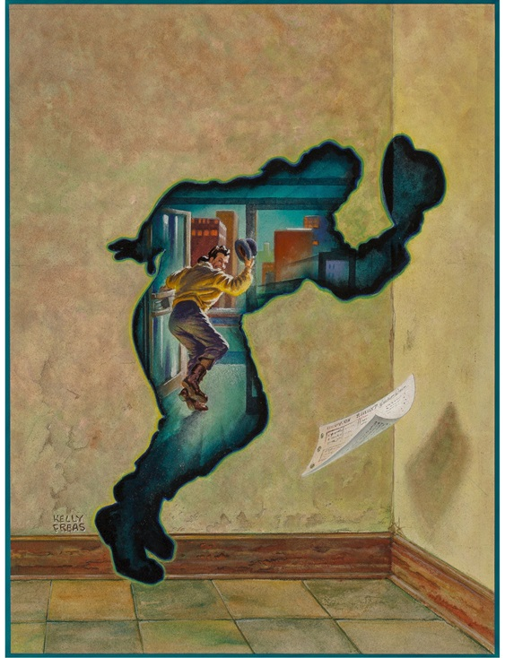

¡Hola, compañeros y Luis!
Ésta es la pagina web personal creada por David Díaz.
Mis 3 principales aficiones:
- Leer libros de ciencia-ficción de los años 60 y 70
- Hacer música con inteligencia artificial y programas de PC
- Viajar por el mundo y conocer nuevas comidas
ACTUALIZACIÓN EJERCICIO 3: "WorldOfPromise" añade imagen para que sea actualizada vía Paint o similar por "davidlazaro":

David Lázaro ha modificado esta web. David Diaz decicirá si mantener este cambio o no